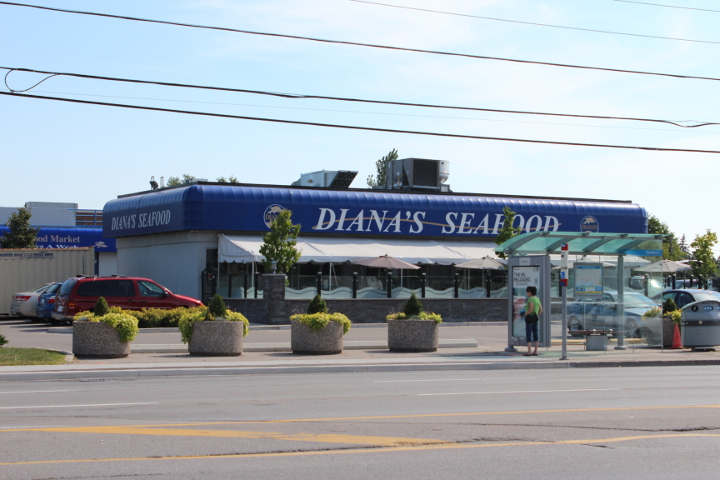
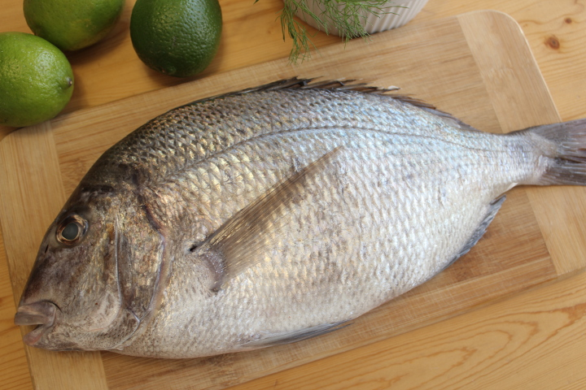
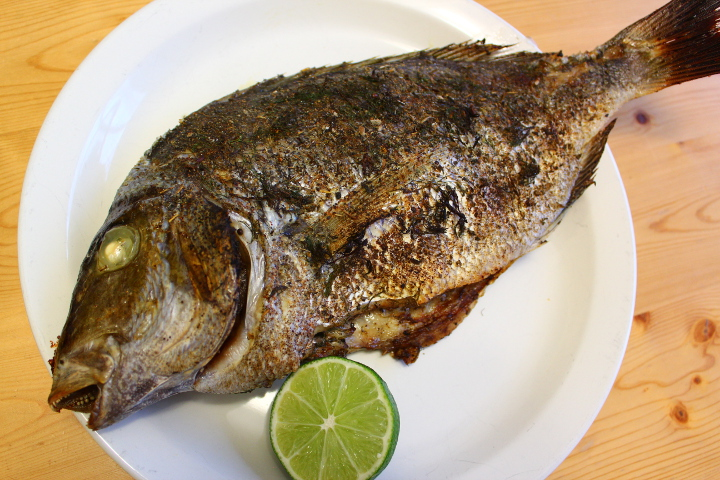
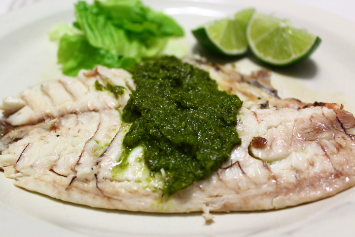

オーブンでPORGYの丸焼き
冬の終わりの肌寒い日、バスに揺られてDiana's Seafood へ。

最近ここにくるとよく買う魚、ポーギー。
氷の上に無造作に並べられたなかから、目が澄んでいて全体がふっくらとしたのを選ぶ。

ポンドあたり５．９ドル（約1.3ドル/100ｇ）とお手ごろ価格でおいしい魚。今回買ったのは約１６００グラムで８．９ドルほどした。
私はお願いしないが、レジでお金を払うときにクリーニングしますか、と聞かれるので内臓をとったりする処理もお願いすることもできる。
ポーギーは鯛の仲間で、身がやわらく淡白な味わいで、私の好きな魚の食べ方である、焼いておいしい魚。
ペットボトルのふたでうろこをばりばりとこそげとり、内臓をとったら、血合いも取り除ききれいに洗い、キッチンペーパーでよく水気をふき取る。
オリーブオイルを全体的に薄く塗り、すりおろしたにんにくと塩を表面にこすりつけ、タイムとセージとディルの葉をちらし５００°Fのオーブンで余熱せずに３５分焼く。

丸焼きだと簡単なのに見た目も豪華でごちそうにみえるのがいい。

自家製のチミチュリソースをたっぷりかけてたべる。